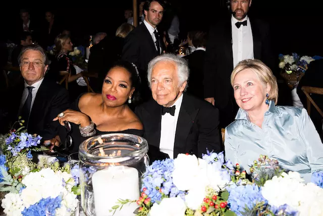
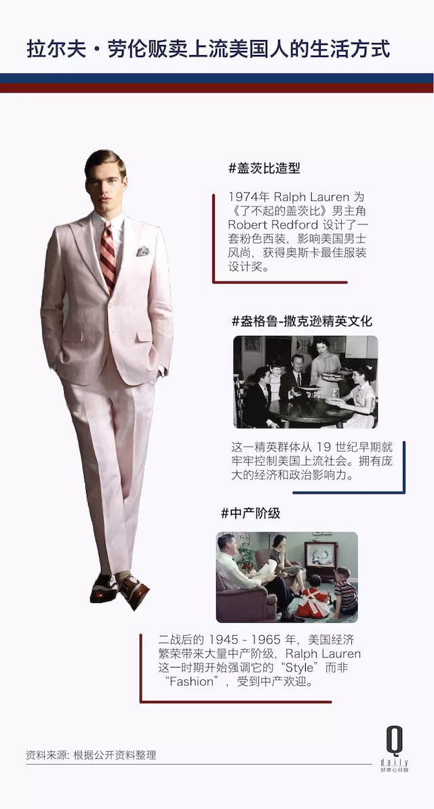
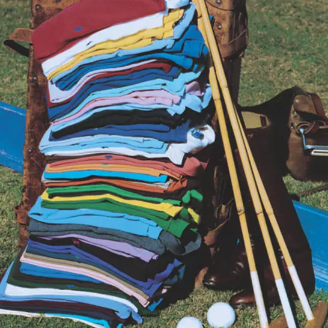
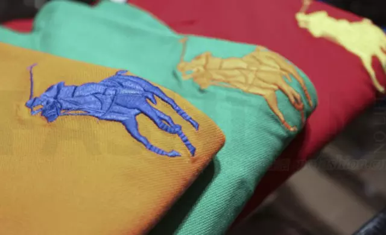
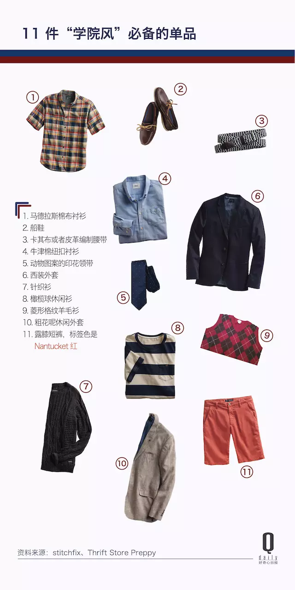
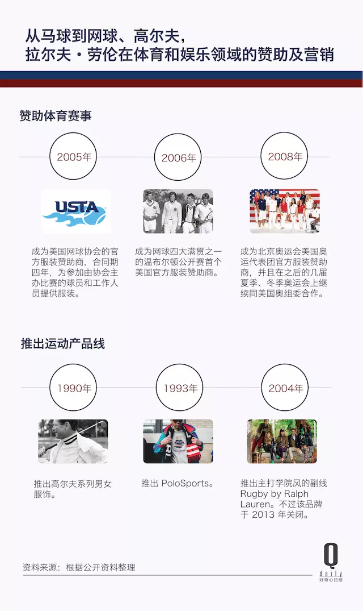

在拉尔夫·劳伦（Ralph Lauren）五十周年大秀上，奥普拉起身敬酒，点明了这个品牌在美国文化中所扮演的角色——“五十年来，你设计我们的梦想、激发我们的抱负、创造出一种彰显健康善良之魅力的价值感……你的服装讲述了我们的生活故事，我们今天及未来渴望的那种生活。”
9 月 8 日，这场后来毫无悬念地成为本届纽约时装周声量最高的大秀，地点选在了纽约中央公园华丽的贝塞斯达露台，庭院戏剧性地搭建起 17 块巨大 LED 屏幕，轮番展示设计师最令人难忘的系列。秀后晚宴的餐桌上摆满香槟，牛排则来自劳伦在科罗拉多州的自家牧场。
今年 78 岁的拉尔夫·劳伦曾在高中毕业册上写下他的人生目标之一：“成为百万富翁。”这股动力加上他与生俱来的浪漫天赋，驱使他在 1968 年推出了第一个男装系列，也就是他招牌的 Polo 系列。
周年大秀邀请了 500 位嘉宾，这份包含时尚、媒体、零售、政界的名流清单很可能绝无仅有：希拉里·克林顿身穿淡蓝丝绸，两边有保镖守卫；第五任“邦德”皮尔斯·布鲁斯南和奥普拉坐在一块；罗伯特·德尼罗和斯皮尔伯格距离不远，还有安妮·海瑟薇、新订婚的尼克乔纳斯夫妇……所有美国时装屋的设计师可能都来了，Calvin Klein、Michael Kors、Donna Karan、Thom Browne，其中不乏老拉尔夫·劳伦当年的学徒，也有时装界的新人，比如说唱歌手 Kanye West。
这些人无一例外，都是美国成功人士的典范。他们分享着彼此穿着拉尔夫·劳伦的人生光辉时刻：Ellis Ross “第一次提名艾美奖”时穿着该品牌的高定礼服，67 岁的美国时装设计师 Tommy Hilfiger 说，他在创业之前喜欢穿 Polo Ralph Lauren 的马球衫。
“当我第一次搬到芝加哥，赚的钱足够付房租、汽油钱和电费，而且还能够剩一点儿，我觉得我成功了。”奥普拉举杯分享了这个她还是一名年轻记者时候的故事，“为了庆祝这份成功，我没有去买高级轿车或者珠宝——这是我后来才干的事——我去买了一条拉尔夫·劳伦的毛巾，不光是毛巾，还有拉尔夫·劳伦床单！”
拉尔夫·劳伦销售给美国人的正是对成功的渴望。
与大洋彼岸的欧洲同行们迥异的是，拉尔夫·劳伦用一套全新的美国式的价值观建立起自己跨越 80 个国家的服装帝国，他既能够展现贵族般的奢华，也可以做出粗犷实用的衣服。在半个世纪的服装和广告中，他引用了菲茨杰拉德笔下的盖茨比、华尔街银行家、落基山牧场主、西部牛仔等等远离大部分人生活的那群人的生活方式，然后把这套生活方式贩卖给不打马球的中产阶级。
而在秀场眼角泛泪、和名流好友们轮番握手的老拉尔夫·劳伦本人的经历就是美国梦的化身。
在成为身价 71 亿美元的福布斯富豪拉尔夫·劳伦之前，他的名字叫 Ralph Lipschitz，纽约布朗克斯区一个犹太移民家庭里最小的儿子。经历了学生时代同学们对自己姓氏的戏弄之后，他决定改名为 Lauren。“当我在布朗克斯长大时，我透过玻璃窗看到了这个世界，但不是那个对着学校篮球场的世界，而是我梦想中的那个。”
成长过程中，拉尔夫在电影编织的虚构情节里逃离家庭的贫困，此时正值好莱坞的黄金时代，他从中汲取了那种进入幻想世界的能力。“拉尔夫把自己投射到像加里·格兰特、加里·库珀这些人的场景中。”《真正的天才：拉尔夫·劳伦的生活》的作者迈克尔·格罗斯评价道。
他曾说：“每当我设计一件衣服，我就是在拍一部电影。”把拉尔夫称为一名服装设计师不完全恰当，他本身没有接受过专业的设计训练，但“我不需要一个焦点小组来了解人们想要什么，我能感觉到。”这或许也解释了为什么拉尔夫·劳伦后来能够毫不费力地为 1974 年的电影《了不起的盖茨比》设计出成套的戏服，“白手起家、珍视魅力、追求财富”，在盖茨比的身上看到的就是自己。
从最初的男士领带开始，拉尔夫·劳伦几乎按照一次一样单品的节奏描绘他梦想中的那种生活。
高中毕业并服役两年后，拉尔夫回到纽约，成为高档男装店 Brooks Brothers 的一名领带销售员。他发现当时的领带花色都是千篇一律的窄条、素色，他决定推出一种两倍宽、色彩鲜艳的男士领带，价格也是两倍。从帝国大厦的抽屉里诞生的激进设计，为拉尔夫·劳伦赢下了 Neiman Marcus 百货公司最初 1200 条领带的订单。宽领带后来在纽约城越卖越火，连最开始要求拉尔夫放弃自己名字、贴牌销售的 Bloomingdale's 精品百货也不得不回过头来订购。
1967 年，27 岁的拉尔夫·劳伦开了一家名为 “Polo” 的领带店。1983 年接受泰晤士报采访时他说，之所以叫 Polo（马球），是因为他模糊地感觉到 Polo 有一种“英格兰风情”。
次年 Polo 品牌推出了男装系列。“Brooks Brothers 的经历对我来说很重要，我 24 岁时在那工作，他们（的衣服）却很无聊。”2002 年接受奥普拉采访时拉尔夫说，有一天他走出店里，看到了已经 50 岁的电影明星 Douglas Fairbanks Jr.，他穿着双排扣西装和温莎领衬衫，这幅景象触动了拉尔夫。“当时你找不到那样的衣服，每个人都穿着同样的纽扣衬衫、窄领带，而我想要温莎领、宽领带、修身西装，所以我一件件地做了。”
有了 Polo 这个品牌后，拉尔夫 1972 年推出的一系列 24 色的 Polo 衫索性把马球骑手的形象印在了衣服胸口，这也是品牌日后最著名的标识。
 Polo 衫的样式并非拉尔夫·劳伦的发明，但和法国品牌 Lacoste 那条含蓄的鳄鱼相比，马球骑手的形象对英格兰贵族运动的“暗示”更加直截了当，而且 “Polo Shirt” 在发音上就听起来比 “Tennis Shirt（网球衫）”平易近人，这或许也是因为马球运动本身的存在太过遥远，反而令人愉快。 1970 年代，马球衫逐渐成为常春藤盟校的预科生们穿着的标配，拉尔夫·劳伦则为这些私立学校的年轻人打造了全套服装，被认为是“学院风”的典范。 这种风格从一战开始就十分流行，反映了当时美国新英格兰地区美国上层社会的休闲活动，类似马球、游艇、网球、打猎等等，后来被战后繁荣经济催生的更多中产阶级所效仿。拉尔夫·劳伦抓住了这一点，强调自己的服装是一种“Style”，而非“Fashion”。
 伴随着 New York is My Home、Home Coming 这类怀旧题材的歌曲，整场秀最令人印象深刻的部分，还是充满街头运动气息、色彩缤纷的 Polo 系列，它们看起来像是对于热爱该品牌的嘻哈社群的一点迟来的回应。
“我认为我们拥有的生活方式比领带、衬衫或牛仔裤大得多。这将是未来 50 年的开始。”在最近一次 8 月的年度会议上，拉尔夫·劳伦作为董事会主席对股东们说道。不过现在还不知道，那会是谁的 50 年。
制图：郑舒雅 题图来自 RaIph lauren好奇心商业史
71652 人已订阅